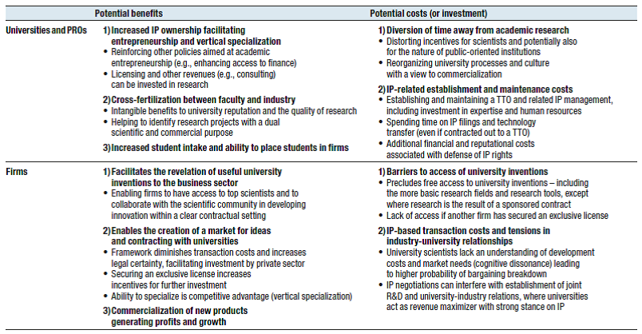

Intellectual property rights and universities and PRIs
The role of universities and public research institutes (PRIs) in innovation systems is complex, and has been and continues to be the subject of much discussion. Importantly, multiple channels exist by which public research can contribute to innovation, including via advice, consultancy and extension services, dissemination of research findings via publications. In addition, universities have a critical role to play in providing the skills needed for innovation. They have received substantial policy attention with regard to their role as innovators. However, with the exception of a few leading institutions in selected sectors (e.g. pharmaceutical, biomedical and software) and in some countries (notably the United States), universities and public research institutes have so far made minor direct contributions to innovation, and licensing revenues or income from spin-off activities have been modest (WIPO, 2011).
In emerging and developing countries this potential contribution has received particular attention since the business sector is often weak, while research capacities are concentrated in universities and PRIs. The potential benefits for innovation might thus be particularly attractive. University spin-offs can help to create an emerging innovative business sector. However, potential costs also have to be considered, particularly when considering the other key roles that universities and PRIs play in emerging and developing countries (Table 1.4). With weak business framework conditions the extension services provided to industry, for instance, might be equally relevant. In particular, the role of universities and PRIs in ensuring the wide dissemination of knowledge is critical and might be compromised if preserving novelty does not allow the immediate dissemination of findings.
Table 1.4 Impact of IP-based technology transfer policies on universities/public research institutes and firms

Source: WIPO (2011).
Another key issue is the impacts on research activities themselves. In order to address these concerns several recommendations have been made regarding reservation rights, such as research exemptions notably for research tools, to ensure inventions with a primary function to facilitate research remain accessible, as well as safeguards to ensure dissemination of technologies with humanitarian and social impacts. Furthermore, provisional patents and grace periods are legal devices that maintain an inventor’s right to patent an invention in the future, while not having to fulfil all necessary conditions immediately in terms of exact description and non-publicity before filing. These devices are well suited to inventions at a very early stage, when all properties have yet to be worked out and the inventor might wish to publish preliminary results in a scientific publication.
Fostering university spin-offs or licensing activities to increase the payoff of public research for innovation has proven challenging for developing, emerging and developed economies alike. This is because a variety of factors beyond granting IP ownership need to be in place for them to serve as an instrument for innovation. IP ownership is only a first step in a process that requires additional steps before inventions can be commercialised. The fundamental questions arising are: (i) incentives for researchers to obtain IP and engage in commercialisation activities, (ii) questions regarding the ownership of IP, (iii) TTOs and related service infrastructures, and (iv) the capacities of the private and public sectors to play their respective roles.
Incentives
Researchers’ incentive schemes are based on the publication track record of university science researchers rather than on IP and, even less, their commercialisation. The relative payoff given to IP over publications plays a key role. If publications result in higher returns than the returns from IP titles, then the IP incentive scheme provided will be weakened. However, as publications also support innovation systems, then it is not necessarily the case that all decisions should favour fostering IP titles. How IP is integrated into incentive schemes is an additional challenge. If researchers are rewarded for every patent application they file, the intended effect might not necessarily benefit high-quality innovation, as researchers might decide to file low-quality patents. Rewards for “quantity” rather than “quality” might even distort the nature of the inventions undertaken, favouring less relevant inventions over more fundamental ones. Furthermore, if no further rewards are available beyond those for IP granted, researchers might not provide often needed effective support for the commercialisation of their inventions.
Moreover, if legal or administrative barriers render participation in spin-offs difficult or costly, this will further reduce the incentives for researchers to fully participate in such activities and thus any potential success. To benefit from the innovation system, researchers must apply and use their knowledge. However, additional investments are often needed in order to progress from the invention phase to the commercial product. Common approaches involve licensing-out patented technologies or creating spin-offs. The latter approach depends on suitable market conditions, such as markets for technology, and on regulations. Some national regulations, for example, do not allow researchers who are public sector employees to create start-ups. Another barrier is the lack of flexible employment contracts among researchers, as e.g. contracts allowing sabbaticals without compromising university career paths.
A further issue is the need to raise awareness among researchers, as commercialisation of knowledge does not form part of the core activities of many researchers. Providing information on opportunities and rewards is often critical and cannot be taken for granted (Zuniga, 2011).
Ownership
A fundamental issue is the way in which IP ownership of universities and research universities is handled. This determines incentives for researchers and universities, both in terms of applying for IP and seeking commercialisation. Among the different approaches adopted, many are influenced by the 1980 Bayh-Dole Act, which instituted a uniform patent policy across US federal agencies and removed many restrictions on licensing. The Act allowed universities to own the patents produced from research financing by federal research grants. Bayh-Dole also stipulated that researchers working on federal research grants are required to disclose their inventions to the Technology Transfer Office (TTO), which then takes a decision on whether or not to patent the innovations. Similar legislation was passed in almost all OECD countries in the 1990s and early 2000s, replacing previous systems including the “professor’s privilege”, whereby inventors could decide for themselves whether or not to patent an invention they owned. If research institutions do not receive returns from inventions of their professorial staff, they have only limited incentives to provide them with support, particularly to produce commercial products out of IP. At the same time, evidence on the impacts of Bayh-Dole and related legislation in developed countries shows that more efforts are required to ensure successful commercialisation strategies by universities and PRIs (Geuna and Nesta, 2006; Mowery et al., 2001) (see Bayh-Dole and related regulation [1]).
TTOs
One way to provide such support is through the creation of TTOs (see Technology transfer offices [2]). These offices help support adequate linkages between universities and the private sector to develop innovations. This is a vital first step since the success of such links often determines the extent to which university IP can contribute to innovation. The role of TTOs is important to provide researchers with necessary support in their use of IP. This includes (i) informing and raising awareness regarding the benefits they can derive from IP; (ii) providing assistance with filing patent applications and legal advice regarding IP; and (iii) supporting the commercialisation of IP by providing partnership advice. Many research institutions have set up TTOs, but shortcomings in funding, management and incentives remains a major challenge to their provision of effective services. Reaching sufficient economies of scale is important for sustainable business models for TTOs. Since individual institutions might not have sufficient scale, the creation of regional TTOs might be of interest (Zuniga, 2011).
Private partnerships
Universities and PRIs often cannot fully exploit their inventions as they lack the necessary manufacturing facilities and marketing departments. Private sector partners can play a key role here either as licensees of their inventions or as partners of spin-offs. Linking up with partners thus represents a major opportunity for research organisations seeking to commercialise their inventions. However, challenges frequently arise at this stage, particularly with a weak private business sector. This is where adequate legal and regulatory frameworks become essential. Standard collaboration agreements can help support public-private collaborations (e.g. the Lambert toolkit) (UK IPO, 2013). While they cannot address all challenges that inevitably arise given the unpredictable nature of research, they can provide a starting point for negotiations. However, ways of identifying suitable partners often present a more significant challenge. TTOs need to play a critical role in this regard. Moreover, another key condition is the availability at universities of research capacities that can support private industry needs adequately.
Source
OECD (forthcoming), National Intellectual Property Systems, Innovation and Economic Development with Perspectives on Colombia and Indonesia, OECD, Paris.
References
- Geuna, A. and L. Nesta (2006), “University patenting and its effects on academic research: The emerging European evidence”, Research Policy, Vol. 35/6, Elsevier, The Netherlands, pp. 790-807.
- Mowery, D.C., R.R. Nelson, B.N. Sampat and A.A. Ziedonis (2001), “The growth of patenting and licensing by US universities: An assessment of the effect of the Bayh-Dole Act of 1980”, Research Policy, Vol. 30, pp. 99-119.
- OECD (2013), Commercialising Public Research: New Trends and Strategies, OECD, Paris.
- UK IPO (2013), Collaborative Research between Business and Universities: the Lambert Toolkit 8 Years On, UK Intellectual Property Office, Newport, UK.
- WIPO (2011), World IP Report: The Changing Face of Innovation, Geneva, WIPO.
- Zuniga, P. (2011), “The state of patenting at research institutions in developing countries: Policy approaches and practices”, WIPO Working Papers, No. 4, December, WIPO, Geneva.